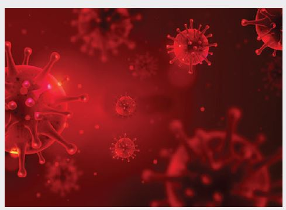

Second wave of COVID-19 in India: Analysing post-pandemic economic recovery
The ferocious second wave At the beginning of the COVID-19 pandemic in 2020, experts contemplated if the pandemic would have several waves like the Spanish flu, which killed approximately 50 million people from 1918 to 1920. India, Brazil and some countries in Europe, that saw a high number of infections early on and proceeded on to a decline – are currently facing an alarming second wave of increased cases and mortality rates.
In India, the second wave of the pandemic that began to tick up in March 2021 (surpassing 375,000 in a single day; the highest daily figure in any country), six months after the first peak in September 2020, is deadlier than the first wave. It continues to stretch the countries’ health systems beyond its limits exposing the grave weaknesses in the healthcare infrastructure including shortages of clinical oxygen, nursing facilities and other equipments. Rollout of the vaccine in the country has also been sluggish due to scant supply. The central and state governments have also been noticeably complacent with its restriction measures and policy decisions. Laxity in people’s behaviour that was observed during festivals (Holi during end March 2021, Ramadan in April-May 2021), election rallies (March-April 2021), and religious congregations (Kumbh Mela in March- April 2021), has made the situation worse. Further, the current crisis threatens to alter the recovery trajectory of the economy by further disrupting supply chains and hampering existing manufacturing capacities.
Survivability: Lives versus livelihood
During the first wave of the pandemic, migrant workers were the worst affected owing to stricter lockdown measures. Shutdown of workplaces and business activities had left many informal migrant workers jobless as they had no choice but to trudge back to their native places. The reverse migration has led to an adverse impact on their earnings and savings, subsequently increasing unemployment and reducing labour force participation. These hardships, both financial and physical have further aggravated with the resurgence of the pandemic’s second wave.
Economies with surging cases due to the second wave have again become insulated after borders are partially closed down and trade disrupted. Many business operations have been seriously affected because of low producer confidence and other restrictions like low working hours and limited workforce. Business competitiveness and new business opportunities like expansion, revenue maximisation, and job creation through partnerships, have also plummeted.
With the unemployment rates in India hovering at 5.45 percent in November 2020 from a peak of 27.11 percent in May 2020, the full scale of the crisis is difficult to document, as around 90 percent of people work in the unorganized sector in “precarious” jobs or are selfemployed. Although the Mahatma Gandhi National Rural Employment Guarantee Scheme (MGNREGS), which subsidized food grains and cash transfers to farmers and women, has provided some degree of social security, the poor and marginalized communities still face the threat of disguised unemployment.

It has been more than a year since the beginning of the COVID-19 pandemic, which should highlight the need to avoid the negative consequences of long-term unemployment. According to CMIE, unemployment rate increased from 6.7 percent at the end of March to 8.6 percent in April 2021. Given the grim conditions of the economy, the sustained 8.5 percent growth required to employ 10-12 million youth in the formal sector is yet to be achieved. There is a sustained need for inclusive large-scale policy measures that support job-creating enterprises and overall business environments.
SDGs: Interconnectedness and long-term impacts
There is a strong interconnectedness between the trinity of – sustainability, businesses and the COVID-19 pandemic. While the pandemic has slowed business, further crushed consumption demand and disrupted many product value chains, it has also pushed businesses and the governments towards the idea of incorporating the UN Sustainable Development Goals (SDGs) framework in their day-to-day business. Further, the Sustainable Development Report 2020 shows that the countries that have been progressing with the SDGs have had a better response to the COVID-19 pandemic. Hence even though, unemployment and survivability is at stake in the light of the current crisis, lack of focus in achieving the SDGs would impede economic recovery in the longer horizon.
There is no doubt that the pandemic has hindered the progress of the SDGs. Just when the economy was on the path of recovery with vaccines being rolled out in different parts of the world, India was hit by a more severe and ghastly second wave. On one hand, SDG 3 (good health and well-being), that plays a crucial role than any other development objective at the moment, is achieved through the development of vaccines and immediate measures to enhance medical infrastructure across the globe. On the other, economic growth has been slow and unemployment has been rising with an asymmetric effect on the labour market as more women than men are being laid off (SDG 8), innovation and infrastructure capacity building has been slacking (SDG 9), poverty (SDG 1) and inequality gap has increased (SDG 10), clean water and sanitation targets are not met (SDG 6) and food security has also become an issue (SDG 2) among others.
The negative impact of the second wave on SDGs is bound to have spill over effects on the Ease of Doing Business (EoDB) and Foreign Direct Investment (FDI) inflow too. This is primarily because goals 8 (decent work and economic growth), 9 (industry, innovation and infrastructure) and 16 (peace, justice and strong institutions) have indicators that capture certain elements of EoDB that are crucial in attracting foreign investments. The following figure depicts a steady increase in India’s SDG and EoDB Indices in the last five years, establishing indicative evidence of positive relationship between the two.
In order to lead the recovery in the post-pandemic economy and create a fair, equitable and sustainable world, SDGs will be pivotal in making the transition. The SDGs are linked with the main types of capital that are important for the long term economic health of a country viz. human capital which is addressed through goals dealing with education, health, hunger, poverty, gender and sanitation; social capital is addressed through the goals that deal with equality, international cooperation, sustainable cities, peace and justice; natural capital is addressed through the goals dealing with various aspects of biodiversity, climate and responsible consumption and production; physical capital on the other hand is addressed through goals that deal with economic growth, clean energy, industry and infrastructure.
In fact, a study by Observer Research Foundation suggests strong econometric evidence where the Indian state-wise SDG scores are also statistically significant in explaining the states’ EoDB and FDI inflows. The inter-dependence between the SDGs and business has immense implications in terms of local action and national policy to cope with the economic ruins from the pandemic. SDGs would not only promote new business opportunities, but more importantly, they would also help in sustaining conducive investment climate in the country.
The way forward
For the loss of livelihood they incurred due to the pandemic, migrant workers and the overall unemployment issue needs to be prioritised by providing adequate social safety nets and health insurance. The magnitude of work under MGNREGA should be increased to absorb a wide range of skilled and unskilled labourers. As proposed by economist Jean Dreze, a demand-driven urban employment programme could also help in urban infrastructure rejuvenation while creating jobs for millions of urban poor when they need it the most.
Finally, an integrated holistic approach should be devised as a response to the pandemic with respect to SDGs. Policy makers must not lose sight of challenges to the implementation of SDGs that predated the current crisis. SDGs shouldn’t be merely seen as a measure confined to looking at development, but also an important instrument to reflect on business environment in India. Global players and governments must come together with renewed political will and engagement. An acknowledgement of the situation must be followed by deliberation over possible solutions to remedy societal evils and address challenges at the very core of our economies.
